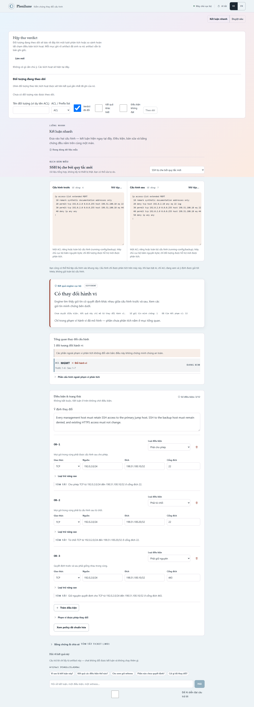

Plenilune / hướng thiết kế đề xuất
Duyệt thay đổi cấu hình
Bàn duyệt thay đổi: nền be kem, viền be thống nhất, kết quả và nguồn đối chiếu có thứ bậc.
Chất liệu
01 · Pastel / serif
Hệ cũ. Nền trang trí và biểu mẫu theo dõi giành sự chú ý với thay đổi.
02 · Cream / olive — hướng đã chọn
Viền be thống nhất, bề mặt phẳng, sans rõ dấu Việt; màu chỉ ở trạng thái, link và focus.
03 · Monochrome
Giảm màu mạnh nhưng thiếu phân biệt trạng thái khi duyệt bằng chứng.
Token đang chạy
SurfaceInsetActive · olive
192.0.2.0/24 → 198.51.100.10:22
Hai bố cục
Nguồn → kết quả
Phù hợp khi chưa có kết quả. Giữ hai vùng nhập trước/sau dễ nhận biết.
Kết quả → nguồn — chọn khi đã phân tích
Kết luận và tổng quan song song; nguồn ngay dưới; điều kiện và bằng chứng mở khi cần.
Ảnh tham chiếu sản phẩm trước chỉnh sửa

Ảnh chụp sản phẩm thật; không phải ảnh tham chiếu từ Linear. Recipe màu nền Editorial Warm lấy từ catalog của ui-styles; typography sans giữ cho dữ liệu.
Chưa đóng băng thiết kế
Bản dựng và ảnh QA đã bàn giao để chủ dự án xem. Chưa có phê duyệt cảm quan hay calibration độc lập.